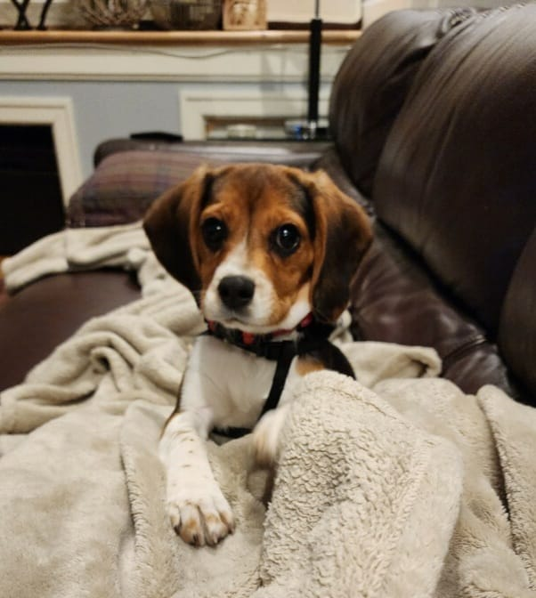

How
To
Adopt
Adoption Process
- The first step in our adoption process is to request an application by emailing us at iPAWinc2022@gmail.com. We suggest you do this as soon as you see a dog on our site that interests you or if you would like us to help you find your next family member. Those who are pre-approved are notified of dogs coming into our care prior to them being posted on Petfinder. Not all of our available dogs are posted online. If a person is interested in adopting a dog, we recommend that you complete and send in your application so that when a dog becomes available that could be a potential match, the application approval process is already complete. If we do not have a dog that matches what a qualified adopter is looking for, we can keep the application on file for future consideration.
- In addition to a completed application, if applicable, a vet reference will be completed by iPaw. Please contact your current/former veterinarian and let them know it will be OK for them to provide a reference check on your behalf. We recommend you contact your vet, letting them know that an iPaw representative will be reaching out to them.
-
Once a completed application has been received, an iPaw volunteer will reach out to you to conduct a brief over-the-phone interview. It is also an opportunity for you to learn whether the dog you have applied for is a good fit, and if not, whether you would be interested in another dog we may have. We try our best to respond to all applicants with 48 hours. If, for some reason, you do not hear from us, we encourage you to email us to make sure that we have actually received your application. In the email, it is important to include your phone number.
- A home visit is the last step in the application process.
- Once the application is received, vet reference complete, interview conducted, and home visit in the books, the application is ready for review by the adoption team. Applicants are notified either by phone or email as to the outcome of their application (i.e. Approved/Denied).
-
If an application has been pre-approved, and we do not have the right fit for your family a dog that you want, we do work with a large network of other animal groups that might have what you are looking for. In those cases, we are always happy to refer you to them as it is especially important to us that both applicants and dogs benefit from a successful adoption.
-
While we do allow meet-and-greets prior to your making a final decision to finalizing an adoption, we only do so for those with approved applications.
- After an applicant and dog have been matched, an adoption contract is signed, an adoption fee is paid, a gotcha day photo is taken, and the dog goes home with its new family.
- Please know that our adoption process does not necessarily have to end on the gotcha day. iPaw is available to you to help with integration and/or training assistance. We have a host of resources that we are more than happy to share with you upon request. If needed, we can also refer you to professional trainers.
- We consider our adopters a part of the iPaw family and always enjoy seeing pictures and receiving updates on how you and your furry family member are doing.
